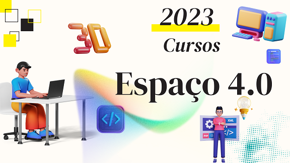

Espaço 4.0
Campus abre inscrições para cursos de Extensão
28/12/2022 - Vagas são destinadas a jovens de 15 a 29 anos
"O projeto Espaço 4.0 está inserido sob um dos pilares de ação do Campus Parnamirim, a Extensão, na perspectiva de produção, socialização e difusão de conhecimentos”. Essa é a definição dada pelo professor José Soares, da disciplina Eletricidade e Eletrônica, que coordena a iniciativa “Espaço 4.0”, ação que tem o intuito de reduzir o desemprego de jovens através da capacitação em tecnologia e inovação para facilitar sua inserção no mundo do trabalho no contexto da Indústria 4.0.

Ao todo, são sete cursos de 20h ofertados de forma gratuita. A seleção de participantes para as turmas de 20 estudantes será feita por ordem de inscrição. Podem participar jovens de 15 a 29 anos, sejam ex-estudantes ou mesmo integrantes da comunidade externa ao Campus Parnamirim.